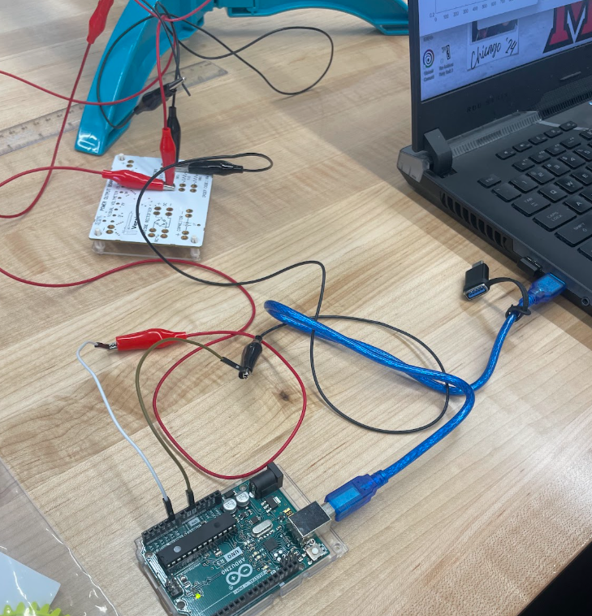
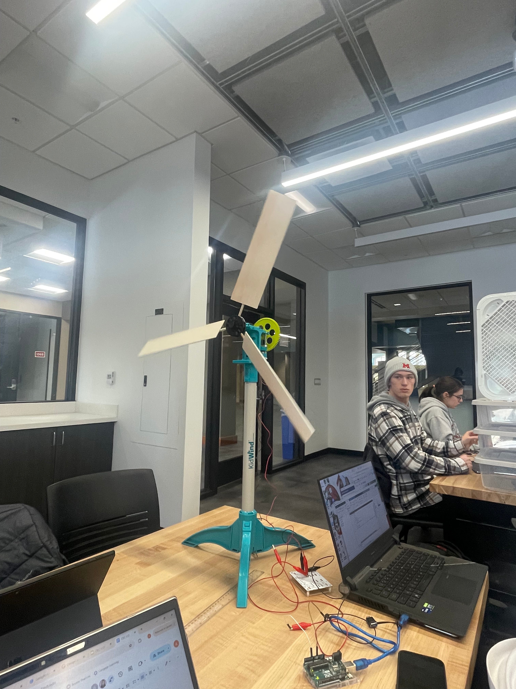

Team 5


How we measured power
To measure the power outage of our wind turbine we connected a high-torque generator to our power outage board via a red positive voltage output wire and a black negative voltage output (or ground) wire. We tested different resistor values and found a 100 ohms resister would be the most efficient for our design. This board was then connected to the Arduino board through the ground and A0 inputs. With the given code a power output was displayed on a computer.
Results from Week 4 day 2
| Resistance (Ohms) | Power (W) |
|---|---|
| 10 Ohms | 0.0063 Watts |
| 30 Ohms | 0.0049 Watts |
| 51 Ohms | 0.003 Watts |
| 100 Ohms | 0.0017 Watts |
Our Past Design Journals
Our Best Design

Parameters
- Fan Power: 3
Power Output
| Gear | Gear Ratio to Teeth | Power Generation (W) |
|---|---|---|
| 1 | 8:64 | 2.9 x 10^-3 |
| 2 | 8:32 | 9.57 x 10^-4 |
| 3 | 8:16 | 1.57 x 10^-4s |
Efficiency Results
Our wind turbine generated the most watts and was the most efficient at fan speed 3 which was the highest speed on the fan. However, the average speed generated was around 0.01 w which isn't ideal for daily things such as charging your phone and it would take forever and not be ideal.